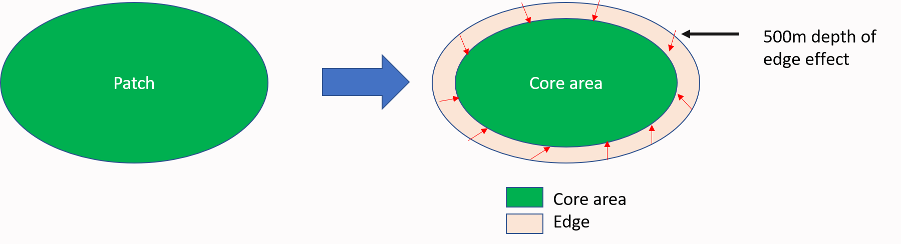
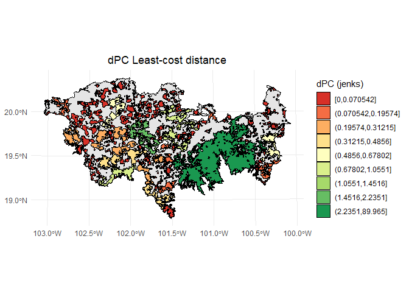
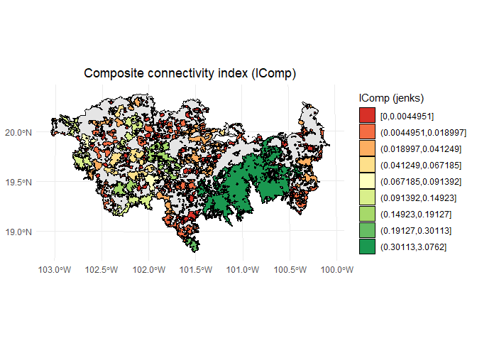
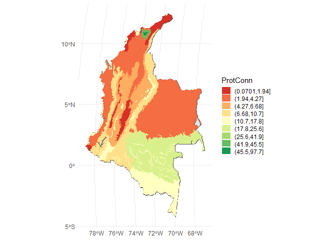

NEWS
Thank you for using Makurhini. We have a new version Makurhini 3.0!
We have a new preprint: Godínez-Gómez, O., Correa-Ayram, C., Goicolea, T., & Saura, S. (2025). Makurhini: An R package for comprehensive analysis of landscape fragmentation and connectivity. Research Square. https://doi.org/10.21203/rs.3.rs-6398746/v1
The MK_dPCIIC() function now includes full support for the three essential PC/IIC fractions, offering a much richer portrayal of landscape connectivity. These fractions capture intra-patch connectivity (intra), direct inter-patch links (direct), and stepwise connectivity through intermediate patches (step). This enhancement provides users with a more nuanced and interpretable breakdown of how different components of the landscape contribute to overall connectivity (for details, see Saura, Bodin & Fortin, 2014; https://doi.org/10.1111/1365-2664.12179).
We also introduced the new MK_dPC_SAMC() function, which brings powerful functionality for estimating overall landscape connectivity and the importance of each habitat patch using the Probability of Connectivity (PC) index. This function leverages a Spatial Absorbing Markov Chain (SAMC) framework to model movement and settlement as a random-walk dispersal process, enabling a realistic, spatially explicit representation of how species traverse heterogeneous landscapes (for details, see Fletcher et al., 2023; https://doi.org/10.1111/ele.13333).
Two new functions have been added: MK_dPCIIC_links and MK_Focal_nodes. The first one is used to estimate the link importance for conservation and restoration. The second estimates the focal Integral Index of Connectivity (IICf) or the focal Probability of Connectivity (PCf) under one or more distance thresholds. Furthermore, this function estimates the composite connectivity index (CCIf; for further details, please see Latorre-Cárdenas et al., 2023. https://doi.org/10.3390/land12030631).
Overview
Makurhini (Connect in Purépecha language) is an R package for calculating fragmentation and landscape connectivity indices used in conservation planning. Makurhini provides a set of functions to identify connectivity of protected areas networks and the importance of landscape elements for maintaining connectivity. This package allows the evaluation of scenarios under landscape connectivity changes and presents an additional improvement, the inclusion of landscape heterogeneity as a constraining factor for connectivity.
The network connectivity indices calculated in Makurhini package have been previously published (e.g., Pascual-Hortal & Saura, 2006. Landscape ecology, https://doi.org/10.1007/s10980-006-0013-z; Saura & Pascual-Hortal, 2007. Lanscape and urban planning, https://doi.org/10.1016/j.landurbplan.2007.03.005; Saura & Rubio, 2010. Ecography, https://doi.org/10.1111/j.1600-0587.2009.05760.x; Saura et al., 2011. Ecological indicators, https://doi.org/10.1016/j.ecolind.2010.06.011; Saura et al., 2017. Ecological indicators, http://dx.doi.org/10.1016/j.ecolind.2016.12.047; Saura et al., 2018. Biological conservation, https://doi.org/10.1016/j.biocon.2017.12.020), and it allows the integration of efficient and useful workflow for landscape management and monitoring of global conservation targets.
Citing Makurhini package
We will soon publish a paper about this package. Until then, please use the following Preprint:
Godínez-Gómez, O., Correa-Ayram, C., Goicolea, T., & Saura, S. (2025). Makurhini: An R package for comprehensive analysis of landscape fragmentation and connectivity. Research Square. https://doi.org/10.21203/rs.3.rs-6398746/v1
Installation
- Depends: R (> 4.0.0), igraph (>= 1.2.6)
- Pre-install Rtools.
- Pre-install devtools (
install.packages(“devtools”)) and remotes (install.packages(“remotes”)) packages. - It is recommended to install the R igraph package (>= 1.2.6) beforehand.
You can install the released version of Makurhini from GitHub with:
library(devtools)
library(remotes)
install_github("connectscape/Makurhini", dependencies = TRUE, upgrade = "never")In case it does not appear in the list of packages, close the R session and reopen.
If the following error occurs during installation:
Using github PAT
from envvar GITHUB_PAT Error: Failed to install 'unknown package' from
GitHub: HTTP error 401. Bad credentialsThen you can try the following:
Sys.getenv("GITHUB_PAT")
Sys.unsetenv("GITHUB_PAT")Makurhini on Linux
To install Makurhini on linux consider the following steps:
-
Use the Linux command line to install the unit package:
sudo apt-get install -y libudunits2-dev -
Use the Linux command line to install gdal:
sudo apt install libgdal-dev -
Use the Linux command line to install libfontconfig and libharfbuzz:
sudo apt install libfontconfig1-devsudo apt install libharfbuzz-dev libfribidi-dev -
You can now install the devtools and remotes packages, and the terra, raster and sf packages directly in your R or RStudio.
install.packages(c('remotes', 'devtools', 'terra', 'raster', 'sf')) -
Use the Linux command line to install igraph:
sudo apt-get install libnlopt-devsudo apt-get install r-cran-igraph -
You can now install the gdistance, graph4lg and ggpubr packages directly in your R or RStudio.
install.packages(c('gdistance', 'graph4lg', 'ggpubr')) Now you can install Makurhini directly in your R or RStudio.
library(devtools)
library(remotes)
install_github("connectscape/Makurhini", dependencies = TRUE, upgrade = "never")Note that the installation of Makurhini on Linux depends on your version of operating system and that you manage to install the packages that Makurhini depends on.
Summary of main Makurhini functions
| Function | Purpose |
|---|---|
| MK_Fragmentation | Calculate patch and landscape statistics (e.g., mean size patches, edge density, core area percent, shape index, fractal dimension index, effective mesh size). |
| distancefile | Get a table or matrix with the distances between pairs of nodes. Two Euclidean distances (‘centroid’ and ‘edge’) and two cost distances that consider the landscape heterogeneity (‘least-cost’ and ‘commute-time, this last is analogous to the resistance distance of circuitscape, see ’gdistance’ package). |
| MK_RMCentrality | Estimate centrality measures under one or several dispersal distances (e.g., betweenness centrality, node memberships, modularity). It uses the ‘distancefile ()’ to calculate the distances of the nodes so they can be calculated using Euclidean or cost distances that consider the landscape heterogeneity. |
| MK_BCentrality | Calculate the BC, BCIIC and BCPC indexes under one or several distance thresholds using the command line of CONEFOR. It uses the ‘distancefile ()’ to calculate the distances of the nodes so they can be calculated using Euclidean or cost distances that consider the landscape heterogeneity |
| MK_dPCIIC | Calculate the integral index of connectivity (IIC) and probability of connectivity (PC) indices under one or several dispersal distances. It computes overall and index fractions (dPC or dIIC, intra, flux and connector) and the effect of restauration in the landscape connectivity when adding new nodes (restoration scenarios). It uses the ‘distancefile()’. |
| MK_dECA | Estimate the Equivalent Connected Area (ECA) and compare the relative change in ECA (dECA) between time periods using one or several dispersal distances. It uses the ‘distancefile()’. |
| MK_ProtConn | Estimate the Protected Connected (ProtConn) indicator and fractions for one region using one or several dispersal distances and transboundary buffer areas (e.g., ProtConn, ProtUnconn, RelConn, ProtConn[design], ProtConn[bound], ProtConn[Prot], ProtConn[Within], ProtConn[Contig], ProtConn[Trans], ProtConn[Unprot]). It uses the ’distancefile(). This function estimates what we call the ProtConn delta (dProtConn) which estimates the contribution of each protected area to connectivity in the region (ProtConn value) |
| MK_ProtConnMult | Estimate the ProtConn indicator and fractions for multiple regions. It uses the ‘distancefile()’. |
| MK_ProtConn_raster | Estimate Protected Connected (ProtConn) indicator and fractions for one region using raster inputs (nodes and region). It uses the ‘distancefile()’. |
| MK_Connect_grid | Compute the ProtConn indicator and fractions, PC or IIC overall connectivity metrics (ECA) in a regular grid. It uses the ‘distancefile()’. |
| MK_dPCIIC_links | Estimate the link importance for conservation and restoration. It calculates the contribution of each individual link to maintain (mode: link removal) or improve (mode: link change) the overall connectivity. |
| MK_Focal_nodes | Estimate the focal Integral Index of Connectivity or the focal Probability of Connectivity and the Composite Connectivity Index under one or more distance thresholds. |
| test_metric_distance | Compare ECA or ProtConn connectivity metrics using one or up to four types of distances, computed in the ‘distancefile()’ function, and multiple dispersion distances. |
Examples
Centrality measures (e.g., betweenness centrality, node memberships, and modularity)
Probability of connectivity (PC) and fractions (Intra, Flux and Connector)
Fragmentation statistics
‘MK_Fragmentation()’ estimates fragmentation statistics at the landscape and patch/node level.
In this example, the MK_Fragmentation() function was applied to estimate fragmentation indices on 404 remaining habitat fragments, which were modeled for 40 species of non-flying mammals of the Trans-Mexican Volcanic System (TMVS) by Correa Ayram et al., (2017).
To define the edge of the nodes we can use, for example, a distance of 500 m from the limit of the nodes.

Fragmentation_test <- MK_Fragmentation(nodes = habitat_nodes, edge_distance = 500,
plot = TRUE, min_node_area = 100,
landscape_area = NULL, area_unit = "km2",
perimeter_unit = "km")

- The results are presented as a list, the first result is called “Summary landscape metrics (Viewer Panel)” and it has fragmentation statistics at landscape level.
class(Fragmentation_test)
#> [1] "list"
names(Fragmentation_test)
#> [1] "Summary landscape metrics (Viewer Panel)"
#> [2] "Patch statistics shapefile"
Fragmentation_test$`Summary landscape metrics (Viewer Panel)`| Metric | Value |
|---|---|
| Patch area (km2) | 12735.7391 |
| Number of patches | 404.0000 |
| Size (mean) | 31.5241 |
| Patches < minimum patch area | 383.0000 |
| Patches < minimum patch area (%) | 28.8879 |
| Total edge | 17920.4740 |
| Edge density | 1.4071 |
| Patch density | 3.1722 |
| Total Core Area (km2) | 6315.9513 |
| Cority | 0.6040 |
| Shape Index (mean) | 2.2073 |
| FRAC (mean) | 8.4400 |
| MESH (km2) | 1443.4320 |
- The second output “Patch statistics shapefile” is a shapefile with patch level fragmentation statistics that can be saved using write_sf() from ‘sf’ package (https://cran.r-project.org/web/packages/sf/index.html).
head(Fragmentation_test[[2]])
#> Simple feature collection with 6 features and 9 fields
#> Geometry type: POLYGON
#> Dimension: XY
#> Bounding box: xmin: 40856.86 ymin: 2025032 xmax: 80825.67 ymax: 2066668
#> Projected CRS: NAD_1927_Albers
#> Id Area CA CAPercent Perimeter EdgePercent PARA ShapeIndex FRAC
#> 1 1 0.8584 0.000 0.0000 5.989 100.0000 0.1433 1.8235 -23.4460
#> 2 2 2.2022 0.000 0.0000 11.346 100.0000 0.1941 2.1568 6.1533
#> 3 3 110.1997 53.378 48.4375 184.969 51.5625 0.5958 4.9705 2.2203
#> 4 4 1.2100 0.000 0.0000 6.974 100.0000 0.1735 1.7885 20.3776
#> 5 5 1.8472 0.000 0.0000 14.452 100.0000 0.1278 2.9996 8.7044
#> 6 6 0.2631 0.000 0.0000 4.685 100.0000 0.0562 2.5766 -2.3133
#> geometry
#> 1 POLYGON ((54911.05 2035815,...
#> 2 POLYGON ((44591.28 2042209,...
#> 3 POLYGON ((46491.11 2042467,...
#> 4 POLYGON ((54944.49 2048163,...
#> 5 POLYGON ((80094.28 2064140,...
#> 6 POLYGON ((69205.24 2066394,...
We can make a loop where we explore different edge depths. In the following example, We will explore 10 edge depths (edge_distance argument): 100, 200, 300, 400, 500, 600, 700, 800, 900 and 1000 meters. We will apply the ‘MK_Fragmentation()’ function using the previous distances and then, we will extract the core area percentage and edge percentage statistics. Finally, we will plot the average of the patch core area percentage and edge percentage (% core area + % edge = 100%).
library(purrr)
Fragmentation_test.2 <- map_dfr(seq(100, 1000, 100), function(x){
x.1 <- MK_Fragmentation(nodes = habitat_nodes,
edge_distance = x, plot = FALSE)[[2]]
CA <- mean(x.1$CAPercent)
Edge <- mean(x.1$EdgePercent)
x.2 <- rbind(data.frame('Edge distance' = x, Type = "Core Area", Percentage = CA),
data.frame('Edge distance' = x, Type = "Edge", Percentage = Edge))
return(x.2)
})
The mean core area percentage (the mean node/patch area that exhibits the least possible edge effect) for all patches is observed to decline by over 60% when an edge depth distance of 1 km is considered.
| Edge depth distance (m) | Core Area (%) |
|---|---|
| 100 | 65.76% |
| 500 | 12.86% |
| 1000 | 3.63% |
Centrality measures
In this example, we continue to use the 404 remaining habitat fragments to estimate centrality indices using the MK_RMCentrality() function.
centrality_test <- MK_RMCentrality(nodes = habitat_nodes,
distance = list(type = "centroid"),
distance_thresholds = 10000,
probability = 0.5,
write = NULL)
head(centrality_test)
#> Simple feature collection with 6 features and 8 fields
#> Geometry type: POLYGON
#> Dimension: XY
#> Bounding box: xmin: 40856.86 ymin: 2025032 xmax: 80825.67 ymax: 2066668
#> Projected CRS: NAD_1927_Albers
#> Id strength eigen close BWC cluster memb.rw memb.louvain
#> 1 1 30228524 0.0010435836 0.03840356 0 1 6 1
#> 2 2 21600031 0.0006195356 0.03995935 1 1 6 1
#> 3 3 29320545 0.0009026418 0.03831019 0 1 6 1
#> 4 4 16499522 0.0005867564 0.04187906 23 1 6 1
#> 5 5 26068911 0.0011987437 0.04240465 0 1 6 2
#> 6 6 12737692 0.0005630043 0.04627714 17 1 6 2
#> geometry
#> 1 POLYGON ((54911.05 2035815,...
#> 2 POLYGON ((44591.28 2042209,...
#> 3 POLYGON ((46491.11 2042467,...
#> 4 POLYGON ((54944.49 2048163,...
#> 5 POLYGON ((80094.28 2064140,...
#> 6 POLYGON ((69205.24 2066394,...Examples:

Moreover, you can change distance using the distance (?distancefile) argument:
Euclidean distances:
- distance = list(type= “centroid”)
- distance = list(type= “edge”)
Least cost distances:
- distance = list(type= “least-cost”, resistance = resistance raster)
- distance = list(type= “commute-time”, resistance = resistance raster)
Probability of connectivity (PC) and fractions (Intra, Flux and Connector) {#probability of connectivity (PC) and fractions (Intra, Flux and Connector)}
In this example, the MK_dPCIIC() function was applied to estimate the connectivity of the 404 habitat fragments. In addition, we used a raster of dispersion resistance in the landscape that was estimated at a 100-meter resolution using a spatial human footprint index, land use intensity, time of human landscape intervention, biophysical vulnerability, fragmentation, and habitat loss (Correa Ayram et al., 2017). The raster was aggregated by a factor of 5 to change its original resolution from 100m to 500m. To represent different dispersal capacities of multiple species we considered the following median (associated to a probability of 0.5) distance thresholds: 250, 1500, 3000, and 10,000 meters. These four distances group the 40 species according to their dispersal distance requirements.
#Habitat nodes
data("habitat_nodes", package = "Makurhini")
nrow(habitat_nodes)
#> [1] 404
#Study area
data("TMVS", package = "Makurhini")
#Resistance
data("resistance_matrix", package = "Makurhini")
raster_map <- as(resistance_matrix, "SpatialPixelsDataFrame")
raster_map <- as.data.frame(raster_map)
colnames(raster_map) <- c("value", "x", "y")
ggplot() +
geom_tile(data = raster_map, aes(x = x, y = y, fill = value), alpha = 0.8) +
geom_sf(data = TMVS, aes(color = "Study area"), fill = NA, color = "black") +
geom_sf(data = habitat_nodes, aes(color = "Habitat nodes"), fill = "forestgreen", linewidth = 0.5) +
scale_fill_gradientn(colors = c("#000004FF", "#1B0C42FF", "#4B0C6BFF", "#781C6DFF",
"#A52C60FF", "#CF4446FF", "#ED6925FF", "#FB9A06FF",
"#F7D03CFF", "#FCFFA4FF"))+
scale_color_manual(name = "", values = "black")+
theme_minimal() +
theme(axis.title.x = element_blank(),
axis.title.y = element_blank())
PC_example <- MK_dPCIIC(nodes = habitat_nodes,
attribute = NULL,
distance = list(type = "least-cost",
resistance = resistance_matrix),
parallel = NULL,
metric = "PC",
probability = 0.5,
distance_thresholds = c(250, 1500, 3000, 10000))We obtain a list object where each element is a result for each distance threshold.
class(PC_example)
#> [1] "list"
names(PC_example)
#> [1] "d250" "d1500" "d3000" "d10000"
head(PC_example$d10000)
#> Simple feature collection with 6 features and 6 fields
#> Geometry type: POLYGON
#> Dimension: XY
#> Bounding box: xmin: 40856.86 ymin: 2025032 xmax: 80825.67 ymax: 2066668
#> Projected CRS: NAD_1927_Albers
#> Id core_id dPC dPCintra dPCflux dPCconnector
#> 1 0 1 0.0000236 0.0000039 0.0000196 0
#> 2 0 2 0.0001155 0.0000259 0.0000896 0
#> 3 0 3 0.0674997 0.0648563 0.0026434 0
#> 4 0 4 0.0000722 0.0000078 0.0000644 0
#> 5 0 5 0.0001142 0.0000182 0.0000959 0
#> 6 0 6 0.0000277 0.0000004 0.0000273 0
#> geometry
#> 1 POLYGON ((54911.05 2035815,...
#> 2 POLYGON ((44591.28 2042209,...
#> 3 POLYGON ((46491.11 2042467,...
#> 4 POLYGON ((54944.49 2048163,...
#> 5 POLYGON ((80094.28 2064140,...
#> 6 POLYGON ((69205.24 2066394,...Each element of the list is a vector type object that can be exported using the sf functions and in its vector formats (e.g., shp, gpkg) using the sf package (Pebesma et al., 2024), for example:
We can use, for example, ggplot2 to map the results:
library(classInt)
library(dplyr)
library(ggplot2)
PC <- PC_example$d10000 #Result 10 km
# Calcular los intervalos de Jenks para strength
breaks <- classInt::classIntervals(PC$dPC, n = 9, style = "jenks")
# Crear una nueva variable categórica con los intervalos
PC <- PC %>%
mutate(dPC_q = cut(dPC,
breaks = breaks$brks,
include.lowest = TRUE,
dig.lab = 5))
# Graficar en ggplot2 usando las clases Jenks
ggplot() +
geom_sf(data = TMVS, color = "black") +
geom_sf(data = PC, aes(fill = dPC_q), color = "black", size = 0.1) +
scale_fill_brewer(palette = "RdYlGn", direction = 1, name = "dPC (jenks)") +
theme_minimal() +
labs(
title = "dPC Least-cost distance",
fill = "dPC"
) +
theme(
legend.position = "right",
plot.title = element_text(hjust = 0.5)
)
Focal probability of connectivity (PCf)
The function MK_focal_nodes() enables the calculation of the focal Integral Index of Connectivity (IICf) or the focal Probability of Connectivity (PCf) under one or more distance thresholds. Furthermore, this function estimates the composite connectivity index (CCIf; for further details, please see Latorre-Cárdenas et al., 2023). In this example, we apply the MK_focal_nodes() to the 404 habitat patches.
focal_example <- MK_Focal_nodes(nodes = habitat_nodes,
id = "Id",
attribute = NULL,
raster_attribute = NULL,
fun_attribute = NULL,
distance = list(type = "least-cost",
resistance = resistance_matrix),
metric = "PC",
probability = 0.5,
parallel = 4,
distance_thresholds = 10000,
search_buffer = 20000,
intern = FALSE)
head(focal_example)#> Simple feature collection with 6 features and 9 fields
#> Geometry type: POLYGON
#> Dimension: XY
#> Bounding box: xmin: 40856.86 ymin: 2025032 xmax: 80825.67 ymax: 2066668
#> Projected CRS: NAD_1927_Albers
#> Id indice_val EC.PC. PC dPC dPCintra dPCflux
#> 1 1 85.83680 31436.43 0.03140833 0.0007456 0.0007456 0e+00
#> 2 2 220.21679 34543.75 0.02958872 0.0040641 0.0040641 0e+00
#> 3 3 11019.96679 34543.75 0.02958872 10.1770431 10.1770431 0e+00
#> 4 4 121.00179 410905.11 0.04028525 0.0000087 0.0000087 0e+00
#> 5 5 184.72261 409450.69 0.11498190 0.0000204 0.0000204 0e+00
#> 6 6 26.30524 410757.69 0.04821207 0.0000005 0.0000004 1e-07
#> dPCconnector IComp geometry
#> 1 0.00000e+00 2.341805e-05 POLYGON ((54911.05 2035815,...
#> 2 0.00000e+00 1.202515e-04 POLYGON ((44591.28 2042209,...
#> 3 4.55473e-15 3.011257e-01 POLYGON ((46491.11 2042467,...
#> 4 2.30330e-16 3.504816e-07 POLYGON ((54944.49 2048163,...
#> 5 4.38100e-15 2.345631e-06 POLYGON ((80094.28 2064140,...
#> 6 3.69578e-15 2.410604e-08 POLYGON ((69205.24 2066394,...
# Calcular los intervalos de Jenks para strength
breaks <- classInt::classIntervals(focal_example$IComp, n = 9, style = "jenks")
# Crear una nueva variable categórica con los intervalos
focal_example <- focal_example %>%
mutate(IComp_q = cut(IComp,
breaks = breaks$brks,
include.lowest = TRUE,
dig.lab = 5))
# Graficar en ggplot2 usando las clases Jenks
ggplot() +
geom_sf(data = TMVS, color = "black") +
geom_sf(data = focal_example, aes(fill = IComp_q), color = "black", size = 0.1) +
scale_fill_brewer(palette = "RdYlGn", direction = 1, name = "IComp (jenks)") +
theme_minimal() +
labs(
title = "Composite connectivity index (IComp)",
fill = "IComp"
) +
theme(
legend.position = "right",
plot.title = element_text(hjust = 0.5)
)
Equivalent Connectivity Area (ECA)
Example in the Biosphere Reserve Mariposa Monarca, Mexico, with old-growth vegetation fragments of four times (?list_forest_patches).
data("list_forest_patches", package = "Makurhini")
data("study_area", package = "Makurhini")
class(list_forest_patches)
#> [1] "list"
Max_attribute <- unit_convert(st_area(study_area), "m2", "ha")
dECA_test <- MK_dECA(nodes= list_forest_patches, attribute = NULL, area_unit = "ha",
distance = list(type= "centroid"), metric = "PC",
probability = 0.05, distance_thresholds = 5000,
LA = Max_attribute, plot= c("1993", "2003", "2007", "2011"), intern = FALSE)
ECA table:

Another way to analyze the ECA (and ProtConn indicator) is by using the ‘MK_Connect_grid()’ that estimates the index values on a grid. An example of its application is the following, on the Andean-Amazon Piedmont. The analysis was performed using a grid of hexagons each with an area of 10,000 ha and a forest/non-forest map to measure changes in Andean-Amazon connectivity.

Protected Connected Land (ProtConn)
In this example, we assess the connectivity of Colombia’s protected areas network in 33 ecoregions of great importance to the country using the Protected Connected Indicator (ProtConn). Particularly, we have 1,530 polygons of protected areas. The spatial information utilized in this example is derived from the connectivity assessment study of protected areas in the Andean Amazon region, as conducted by Castillo et al., (2020). In order to estimate the ProtConn index, we employ the MK_ProtConn() and MK_ProtConn_mult() functions. In this example, we will utilize an organism median dispersal distance threshold of 10 km, a connection probability pij = 0.5, and a transboundary PA search radius of 50 km (for further details, please refer to Castillo et al., 2020; Saura et al., 2017). We used Euclidean distances, particularly the distances between edges to establish the connections between nodes (PAs).
#Protected areas
load(system.file("extdata", "Protected_areas.rda",
package = "Makurhini", mustWork = TRUE))
nrow(Protected_areas)
#> [1] 1530
MK_ProtConn()
This function calculates the Protected Connected indicator (ProtConn) for a region, its fractions and the importance (contribution) of each protected area to maintain connectivity in the region under one or more distance thresholds.
#Select first ecoregion
Ecoregion_1 <- Ecoregions[1,]
#keep = 0.6 simplify the geometry and reduce the number of vertices
ProtConn_1 <- MK_ProtConn(nodes = Protected_areas, region = Ecoregion_1,
area_unit = "ha",
distance = list(type= "edge", keep = 0.6),
distance_thresholds = 10000, probability = 0.5,
transboundary = 50000, plot = TRUE,
delta = TRUE, intern = FALSE)A dynamic table is generated, displaying the ProtConn values and their fractions. Additionally, a graph is produced, illustrating the ProtConn values and comparing them with the percentage of protected and connected area recommended for a region in the Aichi and Kumming-Montreal targets.
class(ProtConn_1)
#> [1] "list"
names(ProtConn_1)
#> [1] "Protected Connected (Viewer Panel)" "ProtConn Plot"
#> [3] "ProtConn_Delta"
ProtConn_1$`Protected Connected (Viewer Panel)`| Index | Value | ProtConn indicator | Percentage |
|---|---|---|---|
| EC(PC) | 4407396.27 | Prot | 36.7627 |
| PC | 6.5700e-02 | Unprotected | 63.2373 |
| Maximum landscape attribute | 17196418.45 | ProtConn | 25.6297 |
| Protected surface | 6321860.45 | ProtUnconn | 11.1329 |
| RelConn | 69.7168 | ||
| ProtConn_Prot | 85.7949 | ||
| ProtConn_Trans | 1.8411 | ||
| ProtConn_Unprot | 12.3640 | ||
| ProtConn_Within | 85.7256 | ||
| ProtConn_Contig | 14.2744 | ||
| ProtConn_Within_land | 21.9712 | ||
| ProtConn_Contig_land | 3.6585 | ||
| ProtConn_Unprot_land | 3.1688 | ||
| ProtConn_Trans_land | 0.4719 |
ProtConn_1$`ProtConn Plot`
ProtConn delta or the higher contribution to ProtConn value in the ecoregion (grey polygon):
ggplot()+
geom_sf(data = Ecoregion_1, col = "black")+
geom_sf(data = ProtConn_1$ProtConn_Delta,
aes(fill = cut(dProtConn, breaks = classIntervals(ProtConn_1$ProtConn_Delta$dProtConn, 7, "jenks")[[2]])), color = NA)+
scale_fill_brewer(type = "qual",
palette = "YlOrRd",
name = "dProtConn PAs",
na.translate = FALSE)+
theme_minimal() +
theme(
legend.position.inside = c(0.1,0.21),
legend.key.height = unit(0.4, "cm"),
legend.key.width = unit(0.5, "cm")
)
MK_ProtConnMult()
In order to facilitate the estimation of the ProtConn index for a variety of geographical regions, the MK_ProtConnMult function has been incorporated into Makurhini, which enables the estimation of the ProtConn indicator and fractions for different regions.
ProtConn_2 <- MK_ProtConnMult(nodes = Protected_areas,
region = Ecoregions,
area_unit = "ha",
distance = list(type= "edge"),
distance_thresholds = 10000,
probability = 0.5, transboundary = 50000,
plot = TRUE, parallel = 4)A dynamic table and vector (sf class) are generated, displaying the ProtConn values and their fractions. Additionally, a graph is produced, illustrating the ProtConn values and comparing them with the percentage of protected and connected area recommended for a region in the Aichi and Kumming-Montreal targets.
Table:
ProtConn_2$ProtConn_10000$ProtConn_overall10000| ProtConn indicator | Values (%) | SD | SEM | normal.lower | normal.upper | basic.lower | basic.upper | percent.lower | percent.upper | bca.lower | bca.upper | |
|---|---|---|---|---|---|---|---|---|---|---|---|---|
| 3 | Prot | 16.850 | 20.205 | 3.517 | 10.450 | 23.565 | 10.144 | 23.013 | 10.687 | 23.556 | 11.994 | 26.502 |
| 4 | Unprotected | 83.150 | 20.205 | 3.517 | 76.435 | 89.550 | 76.987 | 89.856 | 76.444 | 89.313 | 73.498 | 88.006 |
| 5 | ProtConn | 12.796 | 18.949 | 3.299 | 6.868 | 19.068 | 6.570 | 18.109 | 7.482 | 19.021 | 8.490 | 22.404 |
| 6 | ProtUnconn | 4.054 | 6.338 | 1.103 | 1.911 | 6.169 | 1.754 | 5.938 | 2.171 | 6.354 | 2.425 | 6.913 |
| 7 | RelConn | 56.111 | 35.608 | 6.199 | 44.054 | 68.028 | 43.221 | 68.126 | 44.095 | 69.001 | 43.661 | 68.590 |
| 8 | ProtConn_Prot | 74.027 | 31.381 | 5.463 | 63.387 | 85.165 | 63.818 | 86.275 | 61.778 | 84.235 | 59.889 | 83.739 |
| 9 | ProtConn_Trans | 4.455 | 8.406 | 1.463 | 1.632 | 7.209 | 1.412 | 6.995 | 1.916 | 7.499 | 2.304 | 8.206 |
| 10 | ProtConn_Unprot | 9.397 | 9.631 | 1.677 | 6.181 | 12.529 | 6.037 | 12.391 | 6.403 | 12.757 | 6.534 | 12.830 |
| 11 | ProtConn_Within | 71.013 | 31.782 | 5.533 | 60.339 | 82.255 | 60.864 | 83.601 | 58.426 | 81.163 | 57.382 | 80.824 |
| 12 | ProtConn_Contig | 16.865 | 18.255 | 3.178 | 10.604 | 22.906 | 10.287 | 22.692 | 11.038 | 23.444 | 11.009 | 23.413 |
| 13 | ProtConn_Within_land | 7.954 | 10.850 | 1.889 | 4.231 | 11.549 | 3.801 | 11.277 | 4.630 | 12.107 | 4.939 | 12.968 |
| 14 | ProtConn_Contig_land | 1.620 | 2.264 | 0.394 | 0.864 | 2.363 | 0.793 | 2.343 | 0.897 | 2.446 | 0.986 | 2.531 |
| 15 | ProtConn_Unprot_land | 0.879 | 1.156 | 0.201 | 0.490 | 1.261 | 0.492 | 1.230 | 0.527 | 1.265 | 0.541 | 1.318 |
| 16 | ProtConn_Trans_land | 0.439 | 1.089 | 0.190 | 0.073 | 0.800 | 0.013 | 0.725 | 0.153 | 0.866 | 0.198 | 1.080 |
Plot showing the mean and standard deviation values:
ProtConn_2$ProtConn_10000$`ProtConn Plot`
Vector file of class sf:
head(ProtConn_2$ProtConn_10000$ProtConn_10000)
#> Simple feature collection with 6 features and 19 fields
#> Geometry type: GEOMETRY
#> Dimension: XY
#> Bounding box: xmin: -7873906 ymin: -194383.9 xmax: -6935273 ymax: 1382091
#> Projected CRS: World_Mollweide
#> ECO_ID_U ECO_CODE ECO_NAME EC(PC)
#> 1 10319 NT0107 Caqueta Moist Forests 4407499.00
#> 2 10320 NT0108 Catatumbo Moist Forests 68241.03
#> 3 10321 NT0109 Cauca Valley Montane Forests 188885.91
#> 4 10327 NT0115 Chocó-Darién Moist Forests 220615.52
#> 5 10330 NT0118 Cordillera Oriental Montane Forests 634964.37
#> 6 10333 NT0121 Eastern Cordillera Real Montane Forests 180919.61
#> PC Prot Unprotected ProtConn ProtUnconn RelConn ProtConn_Prot
#> 1 6.5700e-02 36.7627 63.2373 25.6303 11.1323 69.7184 85.7928
#> 2 1.0300e-02 10.1265 89.8735 10.1251 0.0014 99.9865 91.1015
#> 3 3.5000e-03 14.0252 85.9748 5.8789 8.1463 41.9167 63.0300
#> 4 1.3000e-03 7.0816 92.9184 3.6713 3.4103 51.8430 79.6504
#> 5 1.1500e-02 22.8199 77.1801 10.7244 12.0956 46.9956 63.1873
#> 6 2.7500e-02 23.1047 76.8953 16.5873 6.5174 71.7919 78.1763
#> ProtConn_Trans ProtConn_Unprot ProtConn_Within ProtConn_Contig
#> 1 1.8427 12.3645 85.7235 14.2765
#> 2 1.0256 7.8729 90.7351 9.2649
#> 3 4.5807 32.3893 42.6304 57.3696
#> 4 5.9092 14.4404 64.0252 35.9748
#> 5 22.5662 14.2465 61.2057 38.7943
#> 6 3.3240 18.4996 61.7719 38.2281
#> ProtConn_Within_land ProtConn_Contig_land ProtConn_Unprot_land
#> 1 21.9712 3.6591 3.1691
#> 2 9.1870 0.9381 0.7971
#> 3 2.5062 3.3727 1.9041
#> 4 2.3506 1.3208 0.5302
#> 5 6.5639 4.1604 1.5278
#> 6 10.2463 6.3410 3.0686
#> ProtConn_Trans_land geometry
#> 1 0.4723 MULTIPOLYGON (((-7354073 34...
#> 2 0.1038 POLYGON ((-7208574 1001585,...
#> 3 0.2693 MULTIPOLYGON (((-7480526 88...
#> 4 0.2169 MULTIPOLYGON (((-7692447 10...
#> 5 2.4201 POLYGON ((-7154131 1377384,...
#> 6 0.5514 POLYGON ((-7676692 240705.2...Visualize using ggplot2:
#We can use some package to get intervals for example classInt R Packge:
#library(classInt)
#interv <- classIntervals(ProtConn_2$ProtConn_10000$ProtConn_10000$ProtConn, 9, "jenks")[[2]]
ggplot()+
geom_sf(data = Ecoregions)+
geom_sf(data = ProtConn_2$ProtConn_10000$ProtConn_10000,
aes(fill = cut(ProtConn, breaks = interv)), color = NA)+
scale_fill_brewer(type = "qual",
palette = "RdYlGn",
name = "ProtConn",
na.translate = FALSE)+
theme_minimal() +
theme(
legend.position.inside = c(0.1,0.21),
legend.key.height = unit(0.4, "cm"),
legend.key.width = unit(0.5, "cm")
)